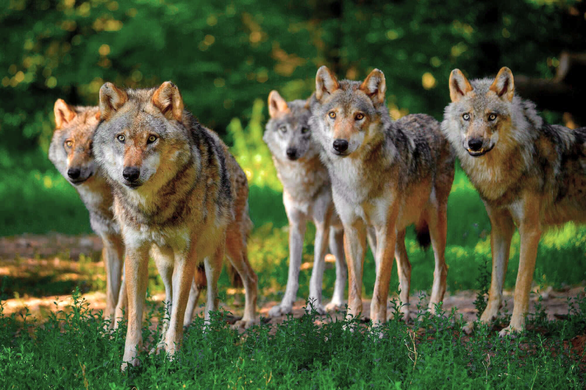

Steckbrief
Videos
Wolf in Kanada
Rotwölfe
Quellen
Quellen:
Wölfe: Letzter Zugriff am 10.02.2024
Rotwölfe: Letzter Zugriff am 10.02.2024
Wölfe in Kanada: Letzter Zugriff am 10.02.2024
Einer der Bilder: Letzter Zugriff am 10.02.2024

Dies war`s schon mit unseren vier Webseiten